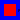

This package contains simple supported beam equation solved with the Method of Lines.
Release Notes:
| Name | Description |
|---|---|
| Beam | |
| SSBIC | |
|  SSBAnalytic |
Implements the simple supported beam equation

The initial conditions are

and boundary conditions are

Because the integrator block cannot accept the equation in this form, we transform the PDE above into two first-order PDEs:

The first equation is implemented in v block, the second in w block.
The analytical solution of this problem is implemented in SSBAnalytic block.
Release Notes:
model Beam
Integrator.UniversalIntegrator v(
vb=2,
ve=worldModel1.n - 1,
icb=2,
ice=worldModel1.n - 1,
bcl=1,
bcr=1);
inner World.worldModel worldModel1(u_xx=1, n=60);
Integrator.UniversalIntegrator w(
vb=2,
ve=worldModel1.n - 1,
icb=2,
ice=worldModel1.n - 1,
bcl=1,
bcr=1);
Modelica.Blocks.Math.Gain gain[worldModel1.n](k=-1);
Modelica.Blocks.Sources.RealExpression BCLu;
Modelica.Blocks.Sources.RealExpression BCRu;
Modelica.Blocks.Sources.RealExpression ICv[worldModel1.n];
SSBIC sSBIC;
Modelica.Blocks.Sources.RealExpression BCLv;
Modelica.Blocks.Sources.RealExpression BCRv;
SSBAnalytic sSBAnalytic;
SpaceDerivative.Derivatives.u_xx u_xx(bcl=0, bcr=0);
SpaceDerivative.Derivatives.u_xx u_xx1(bcl=-1, bcr=-1);
equation
connect(BCLu.y,v. u2);
connect(BCRu.y,v. u3);
connect(ICv.y,w. u1);
connect(sSBIC.y,v. u1);
connect(BCLv.y,w. u2);
connect(BCRv.y,w. u3);
connect(w.y, u_xx.u);
connect(u_xx.y, gain.u);
connect(gain.y,v. u);
connect(v.y, u_xx1.u);
connect(u_xx1.y,w. u);
end Beam;
Implements the initial condition for the v block of the simple supported beam equation
Release Notes:
| Type | Name | Default | Description |
|---|---|---|---|
| Integer | n | worldModel1.n |
| Type | Name | Description |
|---|---|---|
| output RealOutput | y[worldModel1.n] |
block SSBIC
extends Icons.BlockIcon;
outer PDE.World.worldModel worldModel1;
parameter Integer n = worldModel1.n;
protected
Real pi = 3.14159265;
equation
for i in 1:n loop
y[i] = sin(pi*(i-1)/(n-1)) + 0.5*(sin(3*pi*(i-1)/(n-1)));
end for;
public
Modelica.Blocks.Interfaces.RealOutput y[worldModel1.n];
end SSBIC;
Implements the analytical solution of the simple supported beam equation

Release Notes:
| Type | Name | Default | Description |
|---|---|---|---|
| Integer | n | worldModel1.n |
| Type | Name | Description |
|---|---|---|
| output RealOutput | y[worldModel1.n] |
block SSBAnalytic
extends Icons.BlockIcon4;
outer PDE.World.worldModel worldModel1;
parameter Integer n = worldModel1.n;
protected
Real pi = 3.14159265;
equation
for i in 1:n loop
y[i] = (cos((pi^2)*time))*(sin(pi*(i-1)/(n-1))) + 0.5*(cos(9*(pi^2)*time))*(sin(3*pi*(i-1)/(n-1)));
end for;
public
Modelica.Blocks.Interfaces.RealOutput y[worldModel1.n];
end SSBAnalytic;